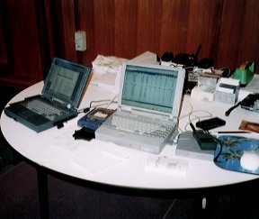
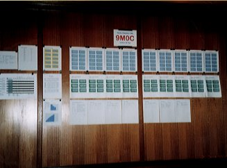
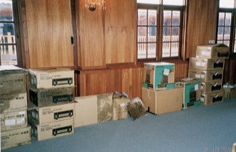
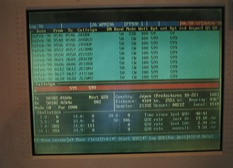
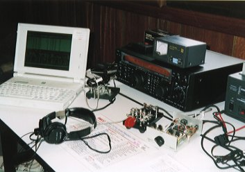
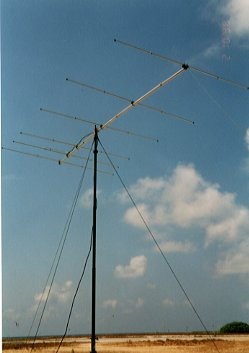
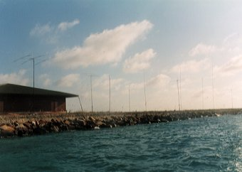
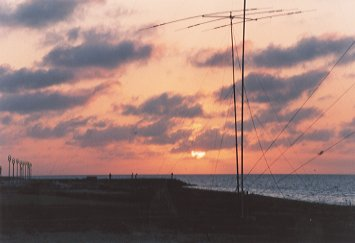
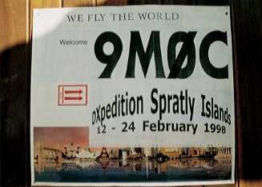

|
|
|
9M0C 運用結果9M0C DX-Pedition 速報9M0C・QSO総数 65,524(DX-Pedi歴代4位)、 50MHzのQSO総数 389(JA、VR2の2カントリー)！【運用体制】9M0Cの運用は00:00－04:00、04:00-08:00、08:00-12:00、12:00-16:00、16:00-20:00、20:00-24:00LMTの6交代のシフトを、 13人のオペレーターがサイト1(S1)からサイト6(S6)の6局で手分けして運用する体制を取った。S1からS4までのメインの4局は、FT-1000MPにVL-1000(Liner AMP)で運用、HF帯の160mからWARCバンドを含む10mまでを運用。 これにサブ局としてFT-920(100W)使用したS5、S6の2局が加わった。 ほかには9M6・コタキナバルのレピータ局にアクセスする2m(144MHz帯)の1局が運用された。 メインのハイパワーの4局は24時間体制でフル運用、これに最繁時(コンデションの良い時)にはサブの2局が、 メイン局が運用していない周波数を補助するといった体制をとった。 オペレーターは24時間中、前記のシフトを最低２つは受け持つことになり、時間帯によってはかなりのハードな運用を強いられることになった。 特に160m/80m/40m帯のローバンドは夜間から明け方が勝負となり、 早朝の運用(00:00－08:00)のシフトは“好きな事”とはいえ、長帳場のDX-Pediではツライものがあった。 【運用形態】運用は全てコンピュータ処理されるため、トランシーバーの傍らに設置されたパソコンでQSOデータを打ち込む方式。メインのS1からS4の各データは430MHzのパケットで送信され、それを集計センターで受信、サーバーで処理するという方式をとった。 サーバーに接続されていないサブのS5とS6の2局のFT-920の情報は、パソコンに蓄積されたデータをフロッピーで転送、 集計される。 情報は処理センターでリアルタイムで集計されるため、サーバーに接続されているS1からS4の4局では、 手元のパソコンで、現在どの“バンド”で“誰”が何の“モード”で運用しているのかが瞬時にモニターできる様になっている。 QSOの集計結果は逆にパソコン側にも送られ“QSO局数”が速報として画面に報告される。 各オペレーターのQSO結果は、QSO局数(バンド別、モード別)に集計され“成績表”の様に一覧表にされ毎日張り出された。 暇なバンドを受け持つとこの“成績”は途端に下がってしまうという仕掛け。 運用場所は20m×30mほどのカーペット張りの大きな会議室が当てられた。 この室の4隅にS1からS4のサイトが配置された。 S5、S6はそれぞれの中間に配置。 室はエアコンが効いていて快適！。
◎ 最終集計後、各局のQSO数が発表された
G3NOM 7696 G3SED 5141
9H1EL 7386 G0OPB 4070
G4DQW 7188 G3WGV 3829
G4JVG 6753 G3NUG 3823
G3XTT 6119 K5VT 2066 (2/11-2/15)
JA1RJU 5696 9M6SU 134
G3OZF 5623
Total 65,524
  集計センターのパソコン(左)／各大陸別の伝搬情報が壁に張り出された
【HF帯の主な設備】FT-1000MP(フル装備)4台。 VL-1000 4台。 FT-920 2台。 アンテナはCushcrft A3S(トライバンダー)、A3S＋40m、A3WS(WARCバンド3エレ)、203CD(20mフルサイズ)、 HF6V(バターナット)、30mバーチカル(10MHz)×2、80m用4Square(GP4本)、40m用4Square(GP4本)、160m用30m高バーチカル、 24/18用ダイポール、2m用12エレetc。持ち込んだ機器、装備類の総重量は1.5トンを超えた。
 
装備類の総重量は1.5トンを超えた 【50MHzの運用】9M0Cの6mの運用は予定より1日早い2月11日から50.102MHzでビーコンが発射された。 但し、OP本隊が到着した2月10日と翌11日はHF帯のアンテナの建設にかかりきりで、受信体制が取れず運用はビーコンのみ。HF帯の本格的運用は早くも11日夜から開始され、予定通り翌12日からは6mも朝から本格運用体制に入る事ができた。 6mで今回使用されたFT-920は“オリジナル”のままなので50MHz以下は48MHzまでしか受信出来ず、 49.750MHzの中国のTVがモニターできるのと、48.250/240MHzのマレーシア?のTVがかろうじて確認出来るのみ。 JAのオープンにはこの49.750MHzのTVは欠く事の出来ない貴重なパイロットとなった。 サブ局のサイト6(S6)は、6mのオープンする時間帯の12:00－16:00は、HF運用のシフトからはずされ、 6m専用局として運用され、この時間はJA1RJUが毎日担当する事に決まった。
  QSO Logはパソコンに入力される(左)／50MHzはFT-920(100W)が使われた
【50MHzの設備】アンテナはCushcraftの6エレ(A506)。 RigはYAESUのFT-920。 当初、このバンドでもHF同様リニアーアンプを使用する予定だったが、 50MHzでは保護回路が動作してしまい使用不能となったため、残念ながら最後までFT-920の100W運用となってしまった。
 50MHzの6エレ(高さは8mほど)。
【50MHzの結果】予想以上のオープンで9M0Cの6mのQSO総数は389。 QSOカントリーは10局のVR2(ホンコン)のほかは全てJA局。 JA8を除く北はJA7(秋田)からJA6までのオープンだったが、皮肉な事にBS7Hでは絶対的に有利だったJR6(沖縄)が、 今回は1局もQSO出来なかったこと。 JAがフェードアウトした後、直ぐにコンデションがVR2・ホンコンに移るといったパターンが続いた。
  海側から見たアンテナ群(左側の建物が運用場所)／毎日、夕日が美しい
 ◎ このDX-Peditionでは、"Log Search"を Homepage経由で行なっています。 9M0Cに関する情報は 9M0C SPRATLY 1998 Homepageでご覧下さい。
|